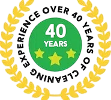
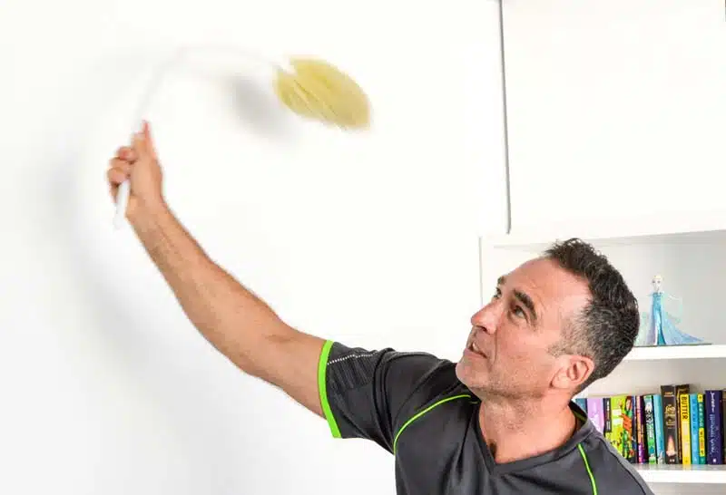
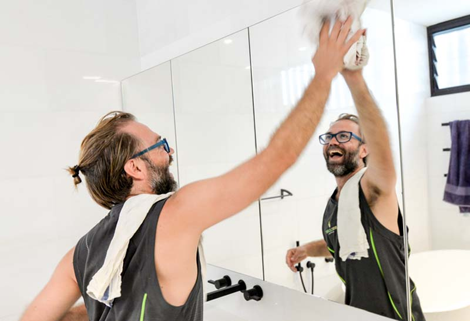
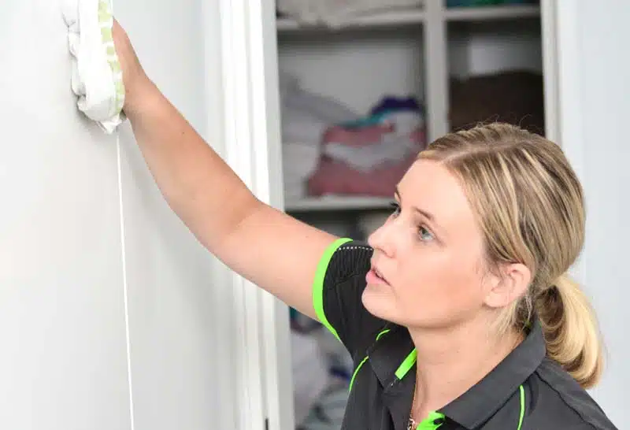
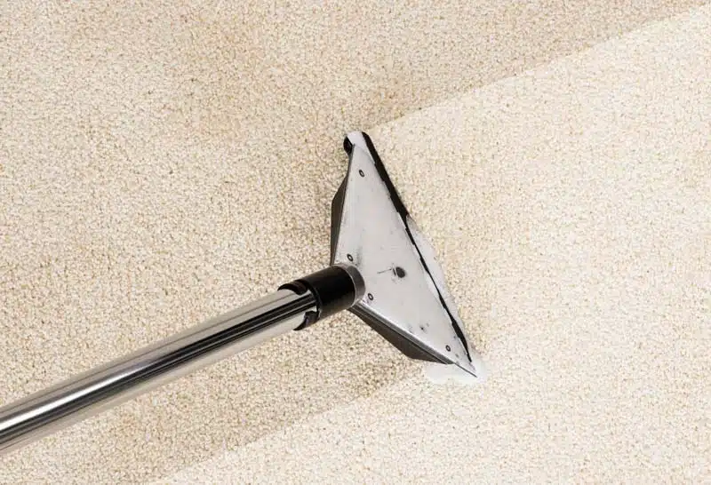
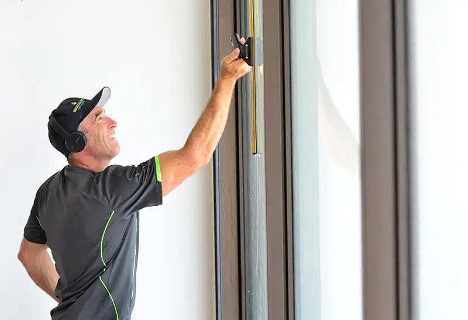
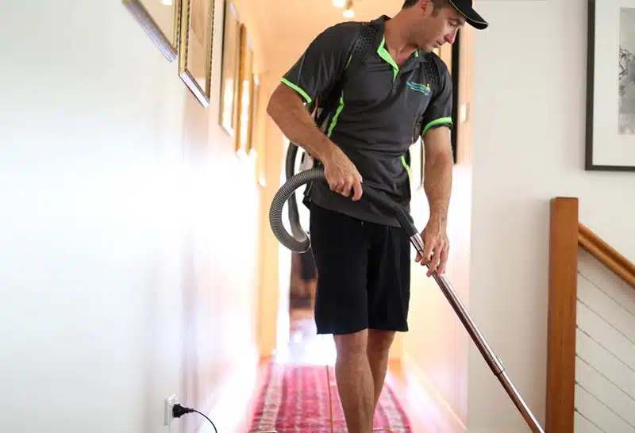
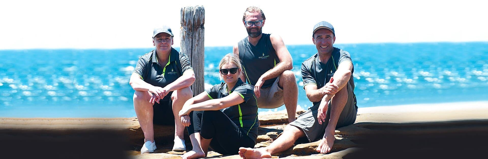
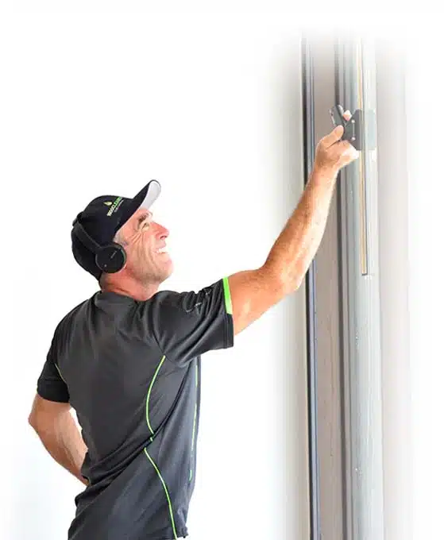
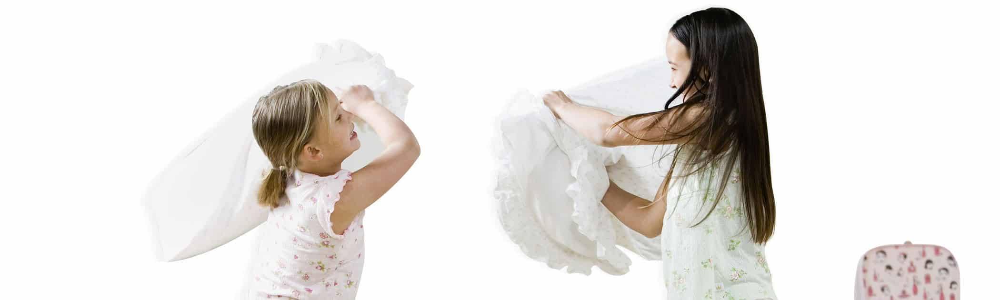

Please free-call us today

Sydney's premier cleaning service using science to leave your home dust-free. Fully guaranteed.

The 21-Point spring clean is a comprehensive house clean from the trusted premier Sydney cleaners. We remove built-up and hidden dust particles as small as 30 microns in size to deliver a spectacularly dust-free home...

Our Mini-Spring clean is perfect for homes that haven't had a good clean for a while. We use Anti-Bacterial filters, an ioniser and HEPA vacuum cleaners to remove microscopic irritants and airborne contaminants too...

The 12-Point regular clean is recommended on a fortnightly basis. By dramatically reducing the dust-drop effect, our special procedures ensure that your home stays spectacularly clean...

We clean carpets thoroughly with a powerful HEPA-Air industrial grade vacuum cleaner. Built in grime and dried soiled materials sometimes require a little more with carpet shampooing...

Cleaning windows is so much fun. Clean windows are the perfect complement to a clean house; whether it's a first time carefully blading without a scratch or part of a regular schedule...

In conclusion, 1800 CLEANER are the experts in all things cleaning, including builders'/renovation cleans, dust-extraction, carpet shampooing, pressure cleaning, window cleaning, organising/de-cluttering...
It was 1986 when 1800 CLEANER's founder, Michael Sweet, started his first Sydney cleaning service business in the leafy suburbs of Beecroft, knocking on doors around the neighbourhood, offering to clean cars for $5 each at the age of thirteen. After building and selling this successful business to another Sydney cleaner, he returned many years later with some new ideas, a scientific approach, and an unforgettable phone number after a decades-long career in advertising.
"This all started when I was trying to get my family home completely dust-free for the arrival of our first baby girl. I bought an expensive vacuum cleaner, all the latest products, and followed all the instructions. Most importantly, the dust returned within days, no matter what I did. In conclusion, I tried everything and even paid a professional cleaning service to have a try with zero luck. What would become known as the "dust-drop effect" continued and started to consume me."

1800 CLEANER specialises in providing first-class and reliable cleaning services throughout Sydney. We developed these services around the critical promise of leaving your house and workplace healthier and dust-free.
In addition, our non-toxic and comprehensive range of professional and proven Sydney cleaning services all come with guarantees of quality, hygiene, and consistency. We've worked hard for decades to build our reputation as the pre-eminent Sydney cleaners with a scientific approach to extracting microscopic dust from our client's homes and workplaces. Likewise, these intelligent cleaning methods, state-of-the-art equipment and a diligent, hard-working team of local professionals deliver outstanding results. And that result is priceless - a dust-free indoor environment. If you've been searching for a Sydney cleaning service you can rely upon, your search is truly over.
Meanwhile, our clients enjoy dust-free living and health and lifestyle benefits that are difficult to describe with words. A human can only fully appreciate a dust-free indoor environment by fully experiencing it. When you live and work in a dust-free home and workplace, your health and well-being are dramatically enhanced. Not to mention the free time and lifestyle benefits of not worrying or stressing about cleaning. It has taken us decades to painstakingly build a reputation as the best cleaners Sydney has to offer.
Furthermore, you can trust our Australian family-run business, and with over 40 years of experience servicing Sydney customers, you can rely on us. Every one of our hard-working cleaners is hand-chosen and trained by our founder for qualities of honesty, kindness, service and integrity that are way above the industry norm. Further, we deliberately recruit people who care. And we take exceptional care of them so they stay with the company for a long time.
In short, we pride ourselves on the virtues of integrity, respect, honesty, intelligence, conscientiousness, kindness, and good old-fashioned hard work. And that's guaranteed. All of our cleaning services carry a 24-hour guarantee. Meaning, that if anything on your service list is not completed to your satisfaction just advise us within 24 hours and we will come back and fix it to your satisfaction at no charge.
Most importantly, 1800 CLEANER understands your time is valuable. Subsequently, it would be best to have a reliable, experienced, professional Sydney cleaner to get the job done right the first time, every time, with minimal disruption to your time or routine. That's not just what we promise; it's a guarantee. In short, we bring our vast experience, solid and trusted expertise, and sensitivity to your cleaning needs to every job with everyone on our team. The package includes innovative cleaning systems, premium products, and intelligent cleaning solutions.
Meanwhile, every weekend in Sydney, families find themselves doing the cleaning. When the cleaning is complete, the feeling can be relief, satisfaction, and exhaustion. And as the dust settles and returns in the days and weeks after the cleaning is through, Sydney's army of residential house cleaners can rightly feel dejected when they have to start all over again. This phenomenon is called the "dust-drop" effect and is why we clean so much for so little effect.
Finally and thankfully, science has found a better way, thanks to the obsessive-compulsive cleanliness of the founder of our remarkable and science-driven cleaning company.
Firstly, have you ever noticed that when you move a curtain in the morning and a shaft of sunlight penetrates the room, the dust sparkles and seems to float? These tiny particles defy the laws of physics and gravity. Pondering this phenomenon is the starting point for every household to find freedom from the dreaded "dust-drop" cycle that plagues traditional cleaning efforts. Finally, this fine microscopic dust we usually can't see is why residents often feel like they are constantly cleaning, yet their homes never feel clean enough. Likewise, when cleaning the traditional way, these microscopic dust and pollutant particles go airborne, float around, and then resettle in the hours and days after the cleaning. Nearly every Sydney house cleaner wastes substantial energy and time by moving dust around without removing it.
Furthermore, due to this unstudied "dust-drop" effect, Sydney residents seem to fall broadly into three camps in response to this problem. Firstly, outsourcing the cleaning to external residential cleaning services can be a mixed bag depending on who you choose. Secondly, as our founder did, is to clean more yourself and possibly even develop a compulsive cleaning disorder. Thirdly, invariably, is to give up in frustration and let the dust bunnies collect under your bed as you hurriedly clean the surfaces when the guests arrive. In conclusion, each approach has pros and cons, and we want to focus on this last one, neglecting to clean.
Additionally, if you don't clean, then the environment in your home can become highly unhealthy as dirt, detritus, dust, microscopic contaminants, pollens, pollutants, mould, bacteria, and dust-mite populations build up. Additionally, even cockroach infestations take place, which sends toxin levels in your home through the roof. Further, the result is poor health, innumerable physical symptoms, and often a depressed mood and pessimistic outlook. In conclusion, allergic reactions will worsen, your bathroom and kitchen will become a biohazard, and your overall quality of life can worsen. It would help if you had, as our clients do, a reliable house cleaner Sydney residents rely upon. This is an extreme example that does not occur in most households.
Nonetheless, even with the best-kept homes, we still find loads of tiny dust particles gathering en masse in the hidden corners, and even the most seemingly well-kept houses do not escape the "dust-drop" effect without a scientific approach to eliminate it.
Explicitly, cleaning well is all about cleaning those things we can see and those we can't. Even if you can't see microscopic irritants in your home, you can feel them. Hence, 1800 CLEANER has scientifically developed an innovative approach to cleaning that removes microscopic dust and contaminant particles down to 30 microns in size (1/30th the circumference of a human hair). Finally, this makes the house and office look and feel sensually spectacular and ensures the home stays cleaner longer as the "dust-drop" effect is eliminated.
Henceforth, the best part is that our specialist range of home cleaning services will improve the health of your home and even the general well-being of your entire family. This is one of the beautiful health benefits of negative ions. Additionally, as part of our dust-removal process, we infuse your house and office with negative ions, an integral part of nature's feel-good recipe for healthy living.
Indeed in these ways, cleaning is equal parts art and science; we blend the two seamlessly for the benefit of our clients and our Sydney cleaners. Presently 1800 CLEANER has completed over 80,000 cleans and, over many years, has fine-tuned its processes so that every aspect of what we do is innovative and geared towards maximum cleaning effect. Furthermore, our teams use an ioniser to help make the fine particle dust heavy and cling together, which has the side benefit of elevating the mood of those who inhabit the home.
Furthermore, Anti-Bacterial HEPA filters clean the air as we clean the house. We use industrial-grade HEPA vacuum cleaners with superior suction to remove more dirt and microscopic dust. And we exclusively use our non-toxic cleaning products under the brand name ecoLove. Most importantly, our people are provided with a long-term working career, well paid, and cared for with consistent quality work. As a result, our workers stay longer, are happier to clean, and are hard-working, dedicated, friendly, trustworthy and caring. All of our services come with a 24-hour satisfaction guarantee.
Notwithstanding, we are all ears if you think of any improvements we can incorporate into our cleaning services. Further, we are proud to be and continue to work towards being the cleaners Sydney residents trust for dust-free and reliable cleaning services that are exceptional in all areas of customer satisfaction; quality, consistency, reliability, integrity, and value. Altogether, with all of the physical advantages that accrue to our cleaning Sydney customers, there is one last reason to choose 1800 CLEANER that is even more special. That reason is that we care.
Indeed, we provide a comprehensive range of cleaning services our clients have relied on for many years. Still, the real reason for our success is that, as an organisation, we genuinely care. Caring is the real key to happy cleaning. When you walk into your dust-free home, you will feel a difference not just because of the energy in the house but also because of the sense that your cleaner cares for you and your family. And that feeling is simply priceless. We service the Inner West and Eastern Suburbs of Sydney; contact us today for all your home cleaning needs.

1800 CLEANER's founder Michael Sweet, began his career as one of the best Sydney cleaners, all the way back in 1986. As a young boy in Beecroft, he started his first house cleaning service, door-knocking and offering to clean cars for just $5. Afterwards, he sold his original Sydney cleaning business, went to university and went on to a successful career in advertising. As one of a handful of pioneers of the phone names industry in Australia, Michael secured the invaluable phone name pair - 1800 CLEANER and 1300 CLEANER.
In 2005, he developed a scientific and superior cleaning system that removes the dust-drop effect that plagues traditional cleaning approaches. Finally, he focuses every day on training his team to emulate him and follow the system developed over decades to be amongst the best Sydney cleaners in the industry.
Expecting the arrival of their first child in a matter of months, he was worried about the impact of fine particle dust and other airborne and microscopic pollutants on his child's health. So, he went to work experimenting - obsessively. Even when using a top-of-the-line vacuum cleaner, the dust around the home would return in a couple of days and frustrate Michael's effort to find a solution that would last long-term and remove the fine dust that is so harmful to developing immune systems.
Finding a solution to this problem inspired the establishment of 1800 CLEANER. It's impossible to describe what it's like to live in a dust-free home. It can only be experienced. 1,000's of customers across Sydney are now enjoying the fruits of this labour, living in dust-free and healthy indoor environments. Enjoy the great indoors with one call to 1800 CLEANER.
Our professional Sydney house cleaners exclusively use the advanced 1800 CLEANER cleaning system. This scientific and comprehensive approach to cleaning is more effective at capturing dirt and dust than traditional methods. Our advanced cleaning system not only removes microscopic dust and micro-contaminants such as dust mites, viruses and allergens, but it also produces visually, physically and sensually stunning results. Furthermore, we use negative ions, HEPA anti-bacterial air filters, and more innovative cleaning methods to eliminate microscopic dust particles and airborne irritants as small as 30 microns from your home.
This system removes unseen impurities, dust, and contaminants while negative ions infuse your home with a sense of well-being. Negative ions stimulate a biochemical reaction that increases serotonin levels in the human body, which can help reduce depression and stress, boost energy levels, and improve our immune system. Subsequently, the end result is a spectacularly clean and dust-free home that is far easier to maintain and enjoy between cleans as the "dust-drop" effect is practically eliminated.
Our professional Sydney house cleaners are passionate about their work, creating an energetic dimension that is hard to describe but amazing to experience. Combining positive, caring, and professional human energy with negative ions and working from a comprehensive checklist, we provide a cleaning service that positively impacts your health. And the way your home will look and feel is simply impossible to describe. It can only be experienced. Subsequently, the impact of negative ions on our health and mood is a happy coincidence and a secondary benefit to their dust removal properties. In conclusion, we invite you to experience this unique and invigorating cleaning service for yourself.
Simultaneously, we use an ionizer to make fine particle dust as small as 1/30th the circumference of a human hair (30 microns) heavier, making it easier to extract from your home. All-together, our combination of professional Sydney house cleaners, non-toxic products, fresh air, negative ions, and a beautifully clean home makes our cleaning services one of a kind. Furthermore, we are a fully Australian-based company, and our remarkable cleaning services are just a phone call away. So, contact us at 1800 CLEANER to experience the unbeatable combination of science and cleaning.
Furthermore, our unwavering commitment to green cleaning combines our well-trained Sydney house cleaners with non-toxic cleaning products and a superior, scientific cleaning system. Overall, our focus is on delivering efficient, eco-friendly solutions that surpass any other cleaning service. Moreover, we went so far as to develop our own brand of unique, non-toxic cleaning products - the ecoLove product range. Finally, these non-toxic cleaning products are safe for humans, pets, and the environment, allowing you to take pride in your choice to protect the planet while maintaining a clean home.
Moreover, with more than 130,000 cleans completed, our Sydney house cleaners have worked hard to deliver an uncompromising quality standard. Additionally, we're proud of our achievements and are committed to delivering first-class service and an exceptional customer experience on every job. Furthermore, we are a solid and honest group of people. And so, if you too are kind, we're your kind of company. To sum up, our Sydney house cleaners are amongst the industry's finest. Finally, to start living without dust in your life, get in contact with us today for a free quote. After that, the 1800 CLEANER team is ready and waiting to attend to all your cleaning needs.

Altogether, our smart cleaning system, dedicated workers, non-toxic products and state-of-the-art cleaning equipment capture more physical debris and airborne dust. And so, this dramatically reduces microscopic contaminant levels in your home and workplace. Finally, 1800 CLEANER's Sydney house cleaners are trained thoroughly in these methods and systems. In conclusion, the end result is a spectacularly cleaner environment that is a pleasure to live in and easier to keep clean.
Over 130,000 jobs successfully completed. Company first established in 1997. $5m Public Indemnity Insurance Policy.
Air Cleaning of particles down to 30 microns in size dramatically reduces dust mite populations and indoor air pollution.
Organised professionals who are responsive. Intelligent and detailed job sheet system. Full-service family cleaning company.
We developed our own non-toxic cleaning products called ecoLoveTM. Our strict Hygiene Policy keeps you safe.
We have three very important guarantees for our customers. Quality. Hygiene. Consistency.
Real reviews from real Sydney families and businesses who trust 1800 CLEANER for a dust-free home — every single visit.
Our regular cleaner Ana is a gem — her attention to detail is fabulous, and she's extremely friendly and polite. Couldn't recommend the team more highly.
Incredible service from Michael and Annie. We needed a deep clean and the 21-Point was exactly right — every corner of the house felt new. My lungs thank you!
Fantastic carpet clean and fantastic customer service. The carpet and the house feel beautiful — professional, expert and friendly. Highly recommended.
Everything you need to know about our Sydney cleaning service — answered.
The vast majority of the time yes. Firstly, our company focuses on the well-being of our cleaners and as such the average tenure of our cleaners is well beyond the industry average. Secondly, we do not employ transient workers. Thirdly, 1800 CLEANER clients enjoy forging long-term relationships with the same trusted cleaner, usually spanning many years. Finally, when our cleaners do have time off once a year around the traditional Christmas holidays, most clients are having a break from their cleaning at the same time.
In conclusion, on the rare occasion that your regular cleaner is unable to serve you, it is generally the owner and/or one of our other long-term experienced cleaners who will take over and will be directed by your individualised and detailed job sheet. Finally, if this is to occur you will receive advanced notice of any staff changes.
Yes. In fact, when we first started the business, we were gravely concerned by the lack of suitable products available. And so, we went into the lab to create our own under the trademark EcoLove. Therefore, our products are fully non-toxic and use citrus acid as their primary cleaning constituent. Above all, they are pure and harmless to your loved ones, furniture and the environment.
In our experience, we have found that paying cleaners by the hour is a slow road to a painful place. Moreover, unsupervised people who are paid by the hour are often motivated to work slowly and there is no incentive for efficiency or efficacy. Ultimately, we understand that clients wish to be able to compare competitive cleaning services. And so, we believe we have developed the most logical way forward.
Above all, at 1800 CLEANER, we offer a list of services by which we can be held to account for every job and offer a 24-hour quality guarantee towards that end. Firstly, the best way thereby to compare services is to ensure that each competitive price received is accompanied by a list of services to be provided. Secondly, to hold the company to account this way is to ask the all-important question of do they guarantee the list will be completed each time. And thirdly, ask the obvious question; if the list is not completed, what happens next?
Just ask us for a quote on the particular service you require by calling 1800 CLEANER (1800 253 263) or fill in the online quote request form.
We find it disgusting to hear stories that cleaners are using the same dirty mop head all day long; from your neighbour's bathroom into your kitchen come all sorts of unspeakable micro-nasties.
Ultimately, you get what you pay for and in the case of 1800 CLEANER we use fresh and hermetically cleaned cloths in every house and are constantly changing cloths throughout the day. Above all, our cleaners are equipped with fresh and well-organised cloth bags with numerous microfibre mop heads that are washed after every use.
Yes, all of our cleaners speak good English. In our experience, there is a deeper question underneath this one though. And that deeper question is "how do you ensure that my instructions are properly followed?" Moreover at 1800 CLEANER, the solution is simple. In short, our operations manager will work with you to ensure that your expectations are clearly understood and catalogued in advance.
Above all, our system gives our cleaners a daily job sheet with our clients' precise instructions on it. Subsequently, our people are incentivised by the successful completion of all of these tasks. And towards that end, we offer our clients a 24-hour satisfaction guarantee.
In order to extract maximum value from their regular cleaning service, we work with our customers to reduce clutter over time. For those who need immediate help, we can add de-cluttering and organising services to their initial spring clean and get everything in order in a single day. Above all, the ultimate goal is to maximise open surfaces so cleaning is more efficacious and cost-effective and to also give the accumulating dust fewer places to hide.
As a result, imagine how very magnificent it is to return to a minimalist, dust-free and clutter-less haven.
The 1800 CLEANER team are located in Maroubra Australia, but you can still reach us on Yelp, and True Local. You can call us on 1800 253 263, we are open Monday through Sunday 7AM to 7PM. We are located at Maroubra Beach, near Sydney Airport (SYD), and our team cover both the inner west and eastern suburbs of Sydney.
The 1800 CLEANER team have serviced the following areas faithfully for decades:
Please free-call us today
Please provide: your address, the number of bedrooms and bathrooms you have, the type of service you require and when.